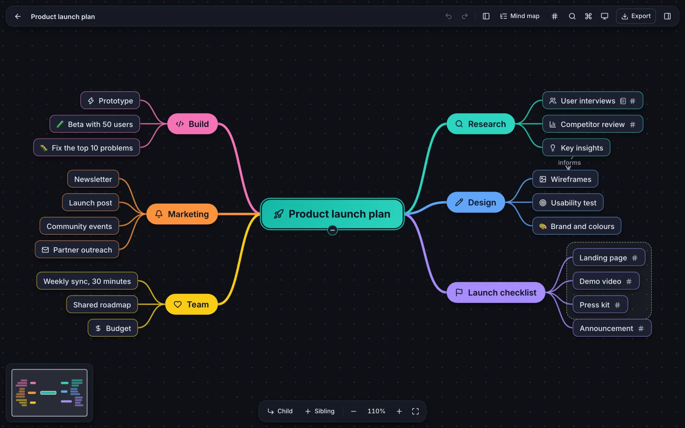
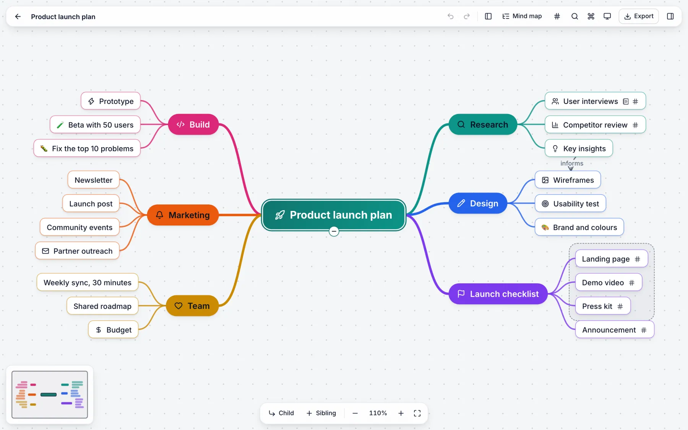
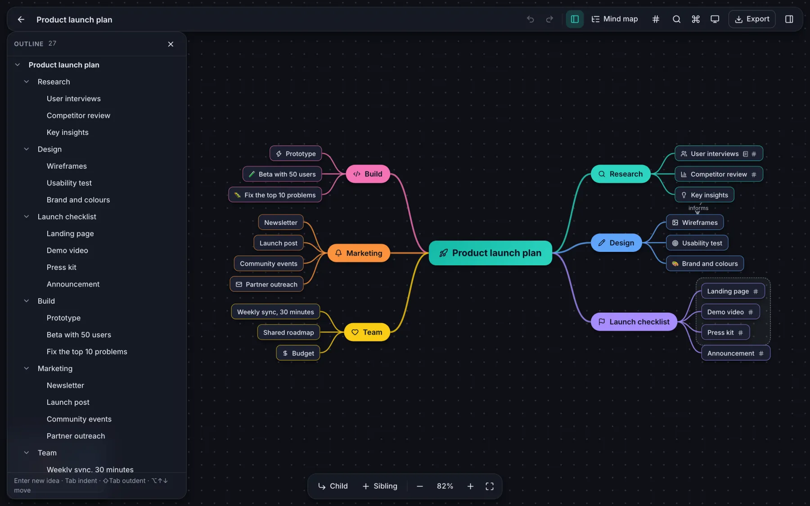
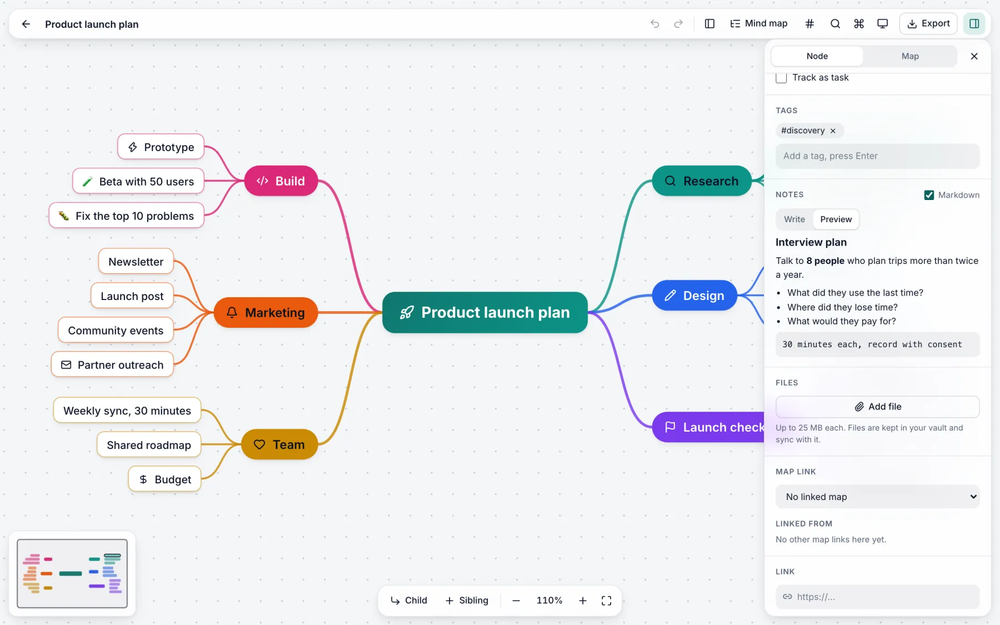
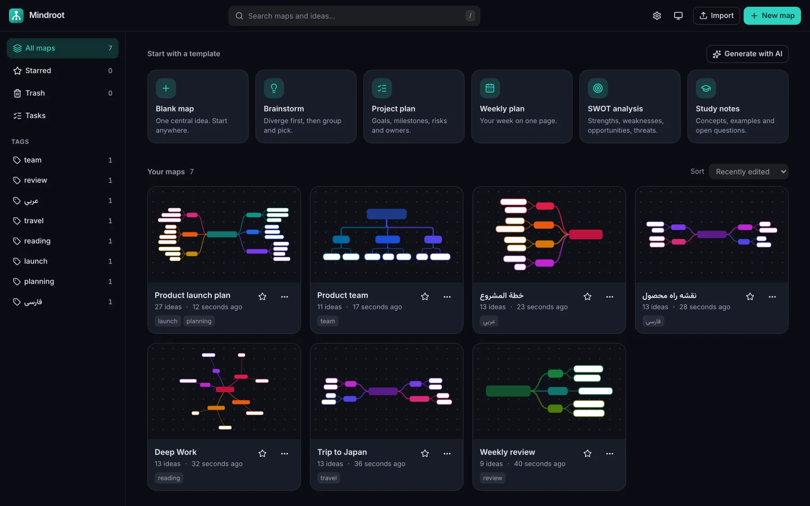
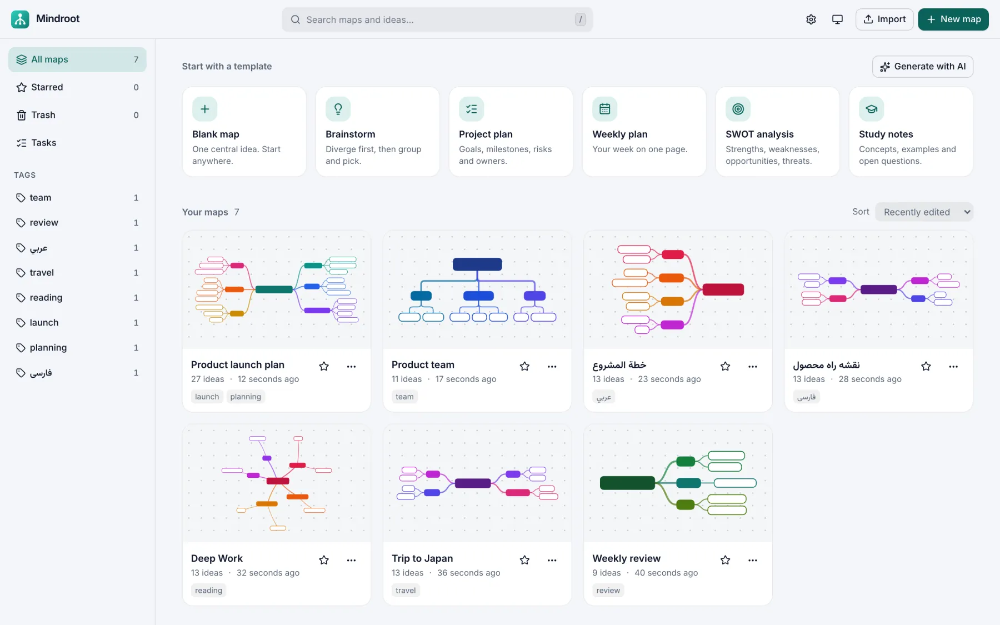
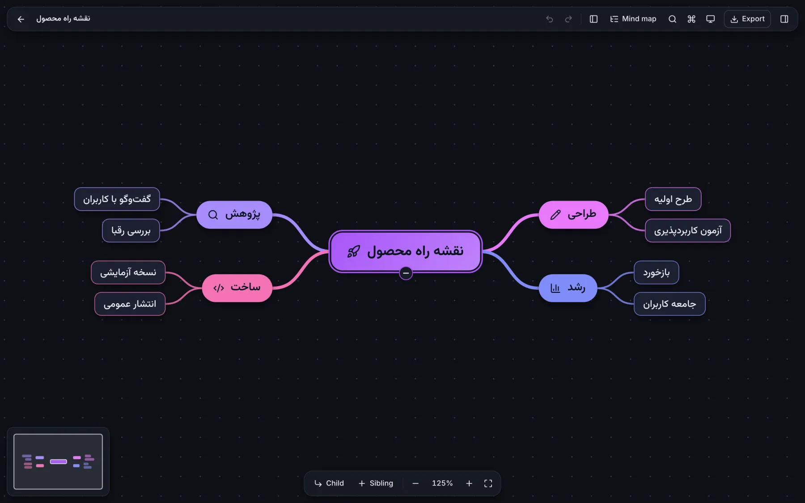
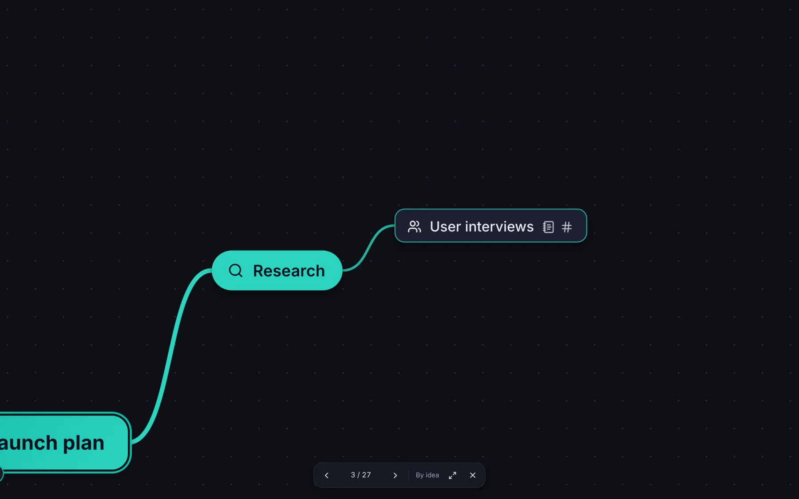

Made for the keyboard
Tab adds a child. Enter adds a sibling. The arrow keys move. A command palette holds every action. You can build a full map and never touch the mouse.
Mindroot is a fast mind-mapping app for your desktop and your browser. Your maps are plain files on your disk. No account, no cloud. Sync them with your own Git repository.
Free forever · No sign-up · macOS, Windows and Linux


Why Mindroot
Each decision in Mindroot has one goal: nothing stands between you and the next idea.
Tab adds a child. Enter adds a sibling. The arrow keys move. A command palette holds every action. You can build a full map and never touch the mouse.
No account and no cloud. Each map is one readable file on your disk. The app works fully offline.
Point the app at your own private repository. Two computers edit one map, and Mindroot merges idea by idea, not line by line.
Persian, Arabic and Hebrew maps mirror the whole layout. The font is bundled and embedded in exports.
Markdown, highlighted code and LaTeX on every idea. Tags, tasks, due dates, files and links between maps.
Turn a topic or a pasted text into a full map. Expand an idea, find what is missing, summarize a branch. Mindroot has no AI service of its own: you connect the one you trust, and only the text you choose is sent.
Import from XMind, FreeMind, OPML, Markdown and Obsidian canvas. Export to PDF, SVG, PNG, Markdown or one web page.
Git sync, the AI assistant and live collaboration are plugins on the same public API that you can use.
Work on one branch alone. Edit the map as a list beside the canvas. Present one idea or one branch at a time, straight from the map.
A short tour






Sync without a service
No server of ours holds your maps. Sync runs through a Git repository that you own, on GitHub, GitLab or your own server.
Paste the address of a private Git repository in the settings. Mindroot uses the Git that is on your computer.
Each map is one file with one idea on each line. Changes travel as small, readable commits.
Two people change the same map? Both edits survive. You can also restore an old version of a map, or one idea from it.
Need to work at the same moment? Live collaboration runs through a small relay server that you host. Read how.
Download
The desktop app keeps your maps as files on your disk. It adds Git sync, quick capture from any app, and an AI assistant that works with all services.
Latest release · Release notes
Open source
Mindroot is MIT licensed and built in the open. Bug reports, ideas, plugins and pull requests are welcome.
Questions
Yes. Mindroot is free and open source under the MIT license. There is no paid plan and no subscription.
No. There is no account and no sign-up. Open the app and start a map.
In the desktop app, each map is one readable file in a folder on your disk. In the browser version, maps stay in the storage of your browser and are not sent to a server.
Turn on Git sync in the desktop app and give it a private Git repository that you own. When two computers change the same map, Mindroot merges the changes idea by idea.
Yes. Mindroot imports XMind, FreeMind, OPML, Markdown outlines and Obsidian canvas files.
Yes. Right-to-left maps mirror the whole layout, and exports embed the font.
The installers are not code-signed yet, because a signing certificate costs money each year. The code is open, and GitHub builds each installer from it. The download section above shows how to pass the warning.
Mindroot adds no cost. The AI assistant is optional and uses your own API key for an OpenAI-compatible or Anthropic-compatible service.
No install and no sign-up. A short tour shows you the three keys you need.